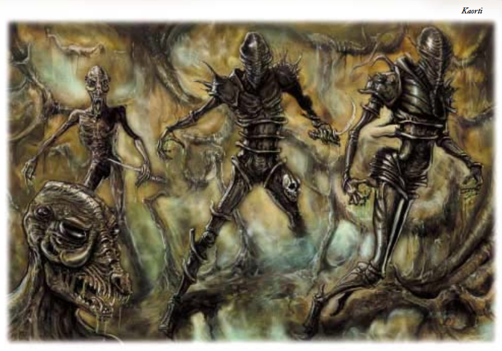

中型异界生物（邪恶,跨位面）

| 生命骰： | 2d8（9hp） |
| 先攻： | +2 |
| 速度： | 30英尺 |
| 防御等级： | 18（+2敏捷，+2天生，+4树脂鳞甲），接触12，措手不及16 |
| 基本攻击／擒抱： | +2/+0 |
| 攻击： | 啮咬+1近战，或飘带匕首+4近战，或飞镖+4远程 |
| 全力攻击： | 啮咬+1近战，或飘带匕首+4近战，或飞镖+4远程 |
| 伤害： | 啮咬1d6-2，飘带匕首1d4-2/×4，飞镖1d4-2 |
| 面宽／触及： | 5英尺/5英尺 |
| 特殊攻击： | 类法术能力，丑恶转化 |
| 特殊能力： | 物质界不耐受，异界生物特性，免疫毒素 |
| 豁免： | 强韧+3，反射+5，意志+3 |
| 属性： | 力量7，敏捷14，体质11，智力14，感知11，魅力16 |
| 技能： | （专注+5），工艺（任意两项）+7，医疗+13，威吓+8，知识（奥秘）+7，知识（位面）+7，法术辨识+9（+11于解读卷轴上的法术），生存+5（位于其他位面+7），使用魔法装置+7（+9于卷轴） |
| 专长： | 擅长异种武器（飘带匕首）（B），武器娴熟 |
| 地域： | 任何非自然（遥远国度） |
| 组织： | 单独，巡逻队（2-9），包囊朝圣队（10-20外加1-3体坏仆），或包囊（21-60外加10-20体坏仆，同时每15名弄体怪中有一个天空流血者） |
| 挑战等级： | 1 |
| 宝物： | 标准，只有物品 |
| 阵营： | 通常中立邪恶 |
| 进化： | 随人物等级 |
| 等级调整： | +2 |
弄体怪偏好使用魔法来对付它们的敌人，同时派遣它们制造的仆从和暴徒投入肉搏战中。若魔法不起作用，弄体怪如果条件允许便会尝试用远程武器战斗；弄体怪擅长所有简易远程武器和手里剑。弄体怪如果陷入近战中，通常会尝试逃跑来重获其施法和远程攻击所需的距离。
弄体怪可以被二级召唤怪物术所召唤。（译者注：没错，翻这篇就是为了这个）
类法术能力：1/日-易容术（译者注：原文为adisguise self，经查无此法术，疑错词），七彩喷射，羽落术，衰弱射线，缩小术，蛛行术。施法者等级2级，豁免DC14+法术等级。
丑恶转变（Su）：一名弄体怪可以为任何活着的生物注入来自遥远国度的轮外精华，永久地将目标转化为一种如同在嘲弄原本形态的新形态。这个过程持续8小时，这段时间内弄体怪必须紧紧咬住受害者，受害者要么自愿，要么在全过程内无助。8小时后，受害者必须进行一个强韧豁免（DC11），失败则变成一名弄体怪（若受害者是类人生物），或变成一个体坏仆。若受害者通过豁免，弄体怪可以再次尝试转变，每次对同一受害者的再次尝试都会使豁免DC+1。变成弄体怪的生物保留其职业能力并且如下述调整其属性值：力量-4，敏捷+4，智力+4，魅力+6。他们变成中立邪恶并且接纳弄体怪的种族精神。他们获得标准弄体怪应有的任何能力和缺点。这种转变是弄体怪繁衍种群的唯一方式。
一名转变为体坏仆的受害者获得炼狱生物模板，但不会获得破邪斩特殊攻击，他们获得每天一次对自己施放克敌机先的能力。（译者注：和伪自然生物一样）
物质界不耐受（Ex）：主物质位面对未作任何防护的弄体怪是痛苦的。一名未作防护措施的弄体怪每小时必须通过一次强韧豁免（DC15，每进行一次下次DC+1）否则受到1d6非致命伤害（译者注：原文为轻微伤害subual damage，3e非致命伤害Nonlethal damage是轻微伤害的一种，3.5统一合并为非致命伤害），并且变得疲劳。在弄体怪恢复所有因暴露在主物质位面导致的非致命伤害前，这种疲劳无法消除。如果弄体怪因为非致命伤害（无论是来自本能力还是其他来源）导致昏迷，主物质位面环境便会开始对其以同样频率造成正常伤害。（通过强韧豁免则避免，豁免dc在先前的基础上继续累积） 一名穿着树脂服，或者位于包囊内的弄体怪可以不受主物质位面的影响。
异界生物特性：弄体怪拥有黑暗视觉（60英尺），并且无法被复生或复活。（尽管许愿术和奇迹术可以让其重获生命）
技能：弄体怪在医疗检定上拥有+8种族加值。
少数弄体怪变得不合群，并脱离了他们与生俱来的包囊。这些角色对转变为弄体怪怀有抗拒心理，并在充满敌意的世界中挣扎求生。
弄体怪天生有成为术士的倾向。弄体怪术士多数会成为弄体怪包囊的领袖。弄体怪法师不准备常见的法术书，他们将法术抄在树脂长带上，并将长带悬挂于弄体怪巢穴的天花板。弄体怪法师和术士都不召唤动物魔宠。多数非施法者的弄体怪是游荡者，尽管弄体怪战士并非无人听闻。鲜有弄体怪成为野蛮人，同时从未有过弄体怪成为神术施法者的记录。
术士是弄体怪的偏好职业。由于他们的特殊能力，一名弄体怪pc的有效角色等级（ecl）等于其职业等级+4。也就是说，1级弄体怪术士的ecl为5，等同于一名5级角色。
多年以前，一群好奇的法师试图刺穿已知存在的边界，进军现实另一侧的遥远次元。他们抵达的地方现在被学者们称为遥远国度，一个满溢疯狂和梦魇的国度。探索者们对自己的能力充满自信，并且原本只打算停留几个小时。不幸地，他们的信心用错了地方。抵达遥远国度后没多久，他们就被某个无名的实体所吸收。探索者们被转化成为遥远国度的恐怖原住民，最初的弄体怪。
探索者们发疯了，忘掉了他们记忆中关于主物质位面的一切。链接遥远国度和物质位面的门户将他们扰乱，新生的弄体怪便毫不犹疑地动身，回到门的另一侧，然后摧毁它。
做完这些事情，遥远国度中痛苦的根源终于被抹除，但弄体怪们也被困在了主物质位面―现在这里对它们的结构是致命的了。
在大批同胞死去后，弄体怪们成功地将自己密封在出发时那所与世隔绝的法师学院中。自第一个包囊出现后，弄体怪们已经扩张种群，威胁着全世界。
弄体怪呈人形，每当他们离开包囊冒险时都必须穿戴合身的盔甲，盔甲由厚厚的树脂和由弄体怪炼金术士养育和栽培的组织制成。穿着树脂服的弄体怪看上去如同一名胳膊和腿被拉长的瘦弱人类。弄体怪每只手上都有三根手指和一根长拇指，丝滑而起伏不定地活动着。它的球形头部靠一根长脖颈固定在身体上。弄体怪的脸部几乎永远隐藏在一圈圈的树脂后面。
没有了树脂服，弄体怪的外观便绝对的非人类了。它的皮肤绿的发棕，混合着透着青灰的粉色，红色和紫色，看上去如同透明的液状物，在肉眼可见的内脏上滑动着。（译者注：怎么读出了玛丽苏的感觉）弄体怪的手指就是无骨的卷须。它的脸如同一只融化的蜘蛛。它的手掌（译者注：palms，亦有"棕榈'的含义，故将resin直译成树脂）不断分泌出一种厚重，绿色的树脂，弄体怪中的"铁匠"们能用树脂来打造武器、盔甲和巢穴的加固材料。
弄体怪平均身高7英尺，重100磅。
弄体怪用他们独有的喉音交流，并且他们在审讯囚犯期间也学会了少量其他语言。多数弄体怪会说通用语和木族语。
边栏：弄体怪与《位面图鉴》（译者注：位面图鉴，MANUAL OF THE PLANES，3e扩展） 如果你在你的战役中启用位面图鉴，并将遥远国度作为战役宇宙的一部分，体坏仆可以使用伪自然生物模板来替代炼狱模板。许多弄体怪奥术施法者选择《卷册与血脉》（译者注：Tome and Blood，3e扩展）中的进阶职业异形学家（译者注：这个进阶在完美奥术中重印，伪自然模板也于该扩展一并重印）；由于弄体怪已经是异界生物，达到10级的弄体怪异形学家的异变化改为获得伪自然生物模板（译者注：异界生物类型改为获得伪自然模板，其他不变）。